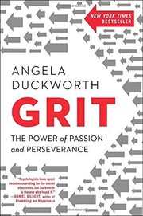

Grit: The Power of Passion and Perseverance
Book·Angela Duckworth, 2016·坚毅

Duckworth argues that long-term passion and perseverance predict achievement better than talent. The predictive power of this claim has been qualified by later research.
- Author
- Angela Duckworth
- Year
- 2016
- Difficulty
- Beginner
- Kind
- Overview
- Schools
- Positive Psychology
- Core theories
- Grit
Editions
- Chinese edition 《坚毅》 [美]安杰拉•达克沃思 · tr. 安妮 · 中信出版社 · 2017 Douban 7.8 (1663 ratings) Douban page ↗
- English edition Grit: The Power of Passion and Perseverance Angela Duckworth · Scribner, first edition · 2016 Open Library ↗